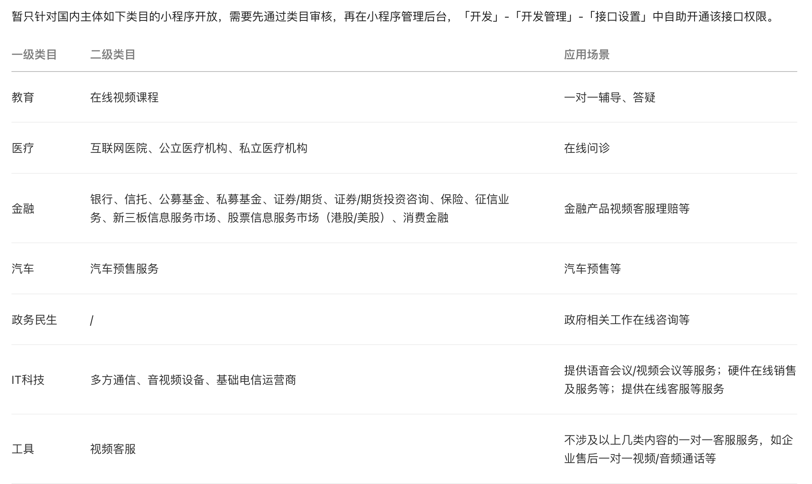
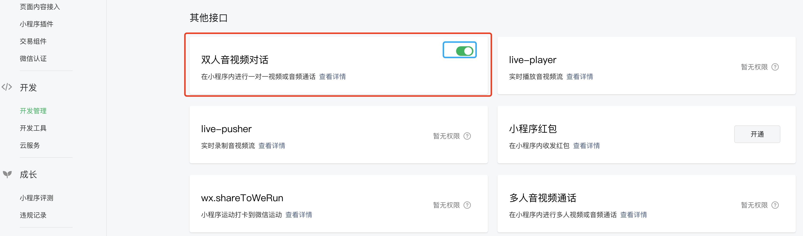
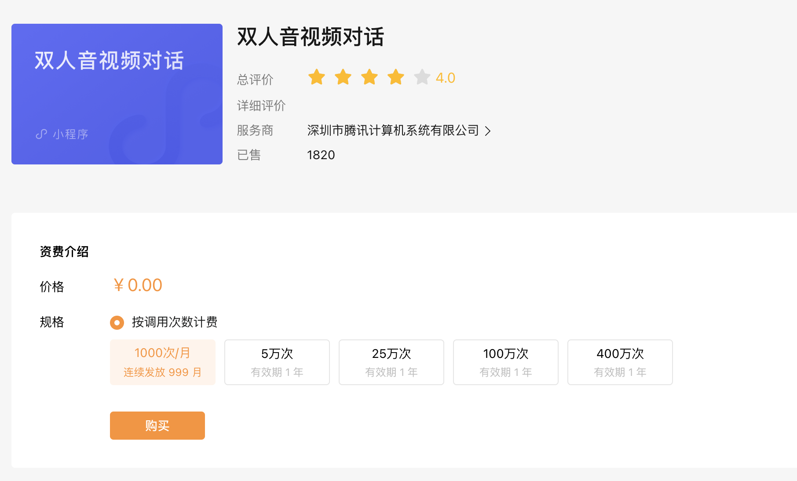
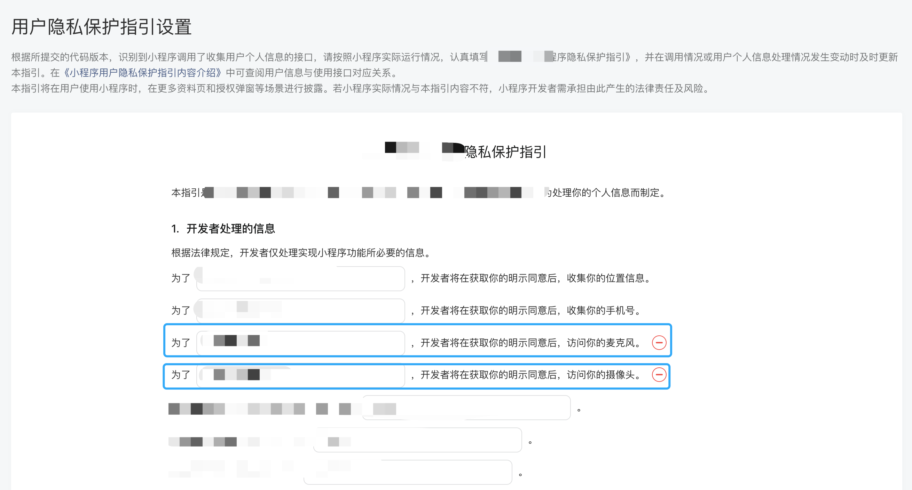

微信小程序实现双人音视频对话
通过双人音视频通话功能（1v1 VoIP），用户可以直接在小程序内进行一对一视频通话或音频通话。该方式仅需调用小程序 API 实现，不需要服务端介入。
微信小程序文档双人音视频对话
开发前准备
1.申请开通支持双人音视频通话的类目

2.开发管理接口设置中开启双人音视频对话功能

3.前往微信服务市场购买免费时常
点击微信服务市场-双人音视频通话前往购买通话时长。

4.更新小程序协议，获取用户麦克风和摄像头权限

代码实现
1.在小程序的 app.json 配置文件中声明所需的权限
{
"pages": [],
"window": {
"navigationStyle": "custom"
},
"usingComponents": {},
"permission": {
"scope.record": {
"desc": "你的描述内容，解释为何需要录音权限"
},
"scope.camera": {
"desc": "你的描述内容，解释为何需要相机权限"
}
}
}
2.询问用户授权
唤起视频通话前需要用户授权麦克风权限和相机权限。
wx.authorize 通常与按钮组件配合使用，当用户点击按钮时，会触发授权请求。开发者需要在按钮组件上绑定相应的回调函数，并在该函数中调用 wx.authorize 方法。
wx.authorize({
scope: 'scope.record,scope.camera',
success() {
// 用户已经同意授权，可以进行录音操作
console.log('用户已授权')
},
fail(error) {
// 用户拒绝授权或者授权录音异常
console.log('scope.record.error: ', error)
},
})
3.开启双人通话功能
微信文档参考wx.setEnable1v1Chat
// 开启一对一通话功能
wx.setEnable1v1Chat({
enable: true, // 是否开启
success() {
// 开启通话功能成功
// 可在这里调用 wx.join1v1Chat 加入（创建）双人通话
},
fail(error) {
// 开启通话功能失败
console.log('enable.error', error)
},
})
4.创建通话
微信文档参考wx.join1v1Chat
const { listenName, listenOpenid, callName, callOpenid } = this.data
wx.join1v1Chat({
caller: {
nickname: callName, // 呼出方昵称，可任意指定
openid: callOpenid, // 呼出方openid，必须是小程序内 openid
},
listener: {
nickname: listenName, // 接听方昵称，可任意指定
openid: listenOpenid, // 接听方openid，必须是小程序内 openid
},
fail: function (err) {
// 加入通话失败的回调
wx.showToast({ icon: 'error', title: '加入通话失败' })
console.log('join.error', err)
},
})
完整代码示例
ts：
Page({
data: {
listenName: 'listener',
listenOpenid: '',
callName: 'caller',
callOpenid: '',
},
async onLoad(query: Record<string, any>) {
console.log('query: ', query)
},
async authorize() {
return new Promise((resolve, reject) => {
// 调用后会立刻弹窗询问用户是否同意授权
// 首次授权会询问，再次授权不会弹窗
wx.authorize({
scope: 'scope.record,scope.camera',
success() {
// 用户已经同意授权，可以进行操作
console.log('用户已授权')
resolve(true)
},
fail(error) {
// 用户拒绝授权或者授权异常
console.log('scope.record.error: ', error)
reject(error)
},
})
})
},
handleChangeCallOpenid(e: WechatMiniprogram.CustomEvent) {
const { value } = e.detail
this.setData({ callOpenid: value })
},
handleChangeCallName(e: WechatMiniprogram.CustomEvent) {
const { value } = e.detail
this.setData({ callName: value })
},
handleChangeListenOpenid(e: WechatMiniprogram.CustomEvent) {
const { value } = e.detail
this.setData({ listenOpenid: value })
},
handleChangeListenName(e: WechatMiniprogram.CustomEvent) {
const { value } = e.detail
this.setData({ listenName: value })
},
async handleCall() {
const auth = await this.authorize().catch(() =>
wx.showToast({ icon: 'error', title: '唤起授权失败' })
)
if (!auth) return
const { listenName, listenOpenid, callName, callOpenid } = this.data
// 开启一对一通话功能
wx.setEnable1v1Chat({
enable: true,
success() {
// 加入（创建）双人通话
wx.join1v1Chat({
caller: {
nickname: callName,
openid: callOpenid,
},
listener: {
nickname: listenName,
openid: listenOpenid,
},
fail: function (err) {
// 加入通话失败的回调
wx.showToast({ icon: 'error', title: '加入通话失败' })
console.log('join.error', err)
},
})
},
fail(error) {
wx.showToast({ icon: 'error', title: '开启通话功能失败' })
console.log('enable.error', error)
},
})
},
})
wxml：
<view class="wrapper">
<view class="title">视频通话</view>
<view class="form">
<view class="form-item">
<view class="label">对方openid</view>
<input
type="text"
placeholder="请输入用户openid"
value="{{listenOpenid}}"
bindinput="handleChangeListenOpenid"
/>
</view>
<view class="form-item">
<view class="label">对方昵称</view>
<input
type="text"
placeholder="请输入用户昵称"
value="{{listenName}}"
bindinput="handleChangeListenName"
/>
</view>
<view class="space"></view>
<view class="form-item">
<view class="label">您的openid</view>
<input
type="text"
placeholder="请输入用户openid"
value="{{callOpenid}}"
bindinput="handleChangeCallOpenid"
/>
</view>
<view class="form-item">
<view class="label">您的昵称</view>
<input
type="text"
placeholder="请输入用户昵称"
value="{{callName}}"
bindinput="handleChangeCallName"
/>
</view>
<button bindtap="handleCall">呼叫</button>
</view>
</view>
scss：
.wrapper {
box-sizing: border-box;
height: 100vh;
background-color: #f5f5f5;
color: #333;
> .title {
padding: 20rpx;
font-size: 28rpx;
font-weight: bold;
}
.space {
height: 30rpx;
}
.form {
.form-item {
display: flex;
align-items: center;
padding: 20rpx;
border-bottom: 1px solid #f5f5f5;
background-color: #fff;
.label {
width: 200rpx;
font-size: 28rpx;
color: #999;
}
input {
font-size: 28rpx;
color: #666;
}
}
button {
margin: 30rpx 20rpx;
border: none;
background-color: rgb(156, 225, 52);
color: #fff;
}
}
}
json：
{
"window": {
"safeArea": true
},
"navigationBarTitleText": "视频通话",
"usingComponents": {}
}
注意事项
- setEnable1v1Chat 不支持在微信开发者工具使用，请使用真机预览或真机调试
- 只有通话双方都打开小程序才能接通
- 通话双方都要授权相机、麦克风权限，否者唤起通话失败
- 开发前准备工作不能露，缺一步都不能实现音视频通话功能